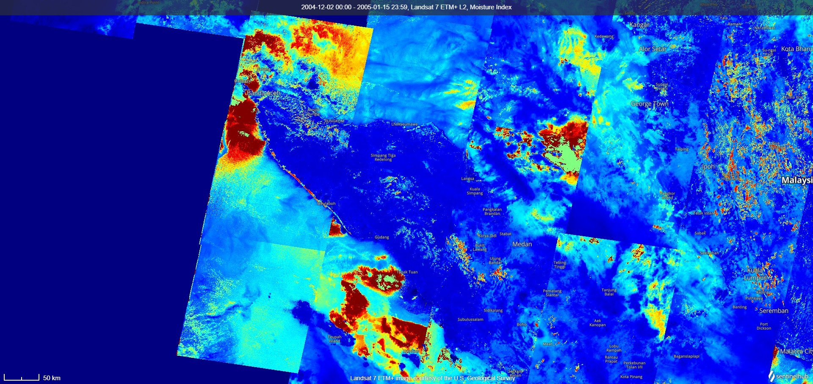
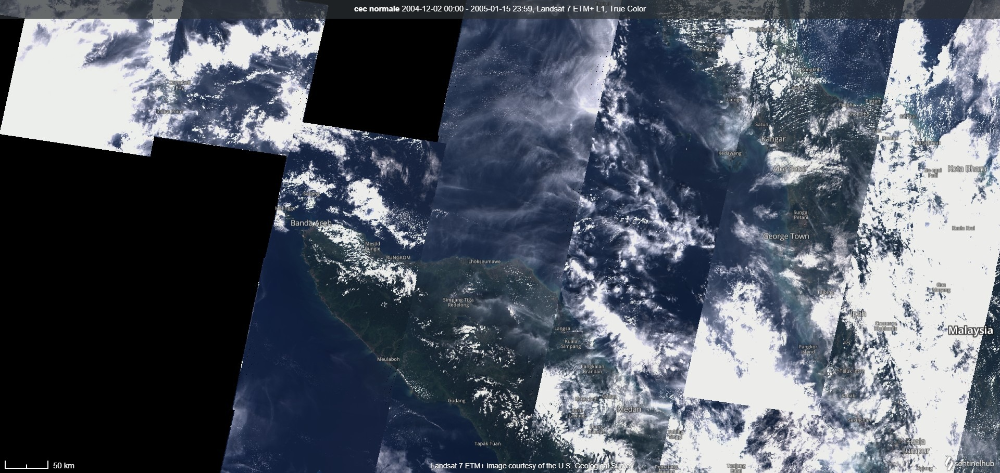

Immagini Satellitari


Dati dei Terremoti
| Grandezza | DataOrario (UTC) | Latitudine | Longitudine | Profondità (km) | Regione |
|---|---|---|---|---|---|
| 9.1 | 2004-12-26 00:58:53 | 3.316 | 95.854 | 30 | Off the West Coast of Northern Sumatra |
| 7.5 | 2004-12-26 04:21:29 | 6.89 | 92.94 | 10 | Nicobar Islands, India Region |